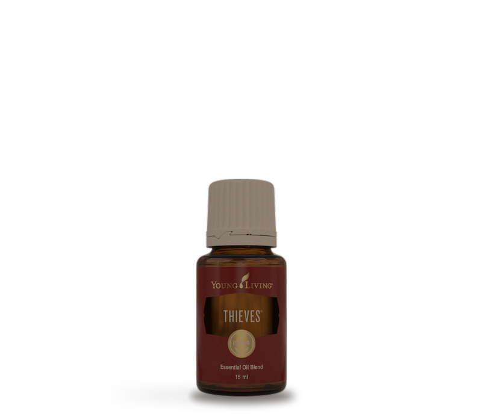
Thieves
mišinys
Šiltas, prieskoninis kvapas, lyg ką tik būtų iškeptas pyragas su gvazdikėliais ir cinamonu.
Kada: rudenį ir žiemą, kai norisi jaukesnių namų, arba po tvarkymosi.
UžsisakytiKaip kasdien naudoti eterinius aliejus ir kaip juos užsisakyti pačiam, kai baigiasi.
Aliejus patiko, naudojai, o kai baigėsi, naujas taip ir neatsirado.
Ne todėl, kad nebereikia. Tiesiog pamiršti arba nežinai, kaip užsisakyti be susitikimo. Čia rasi, kaip naudoti tai, ką jau turi, ką imti toliau ir kaip užsisakyti pačiam, kada tau patogu.
Šituos keturis dažniausiai siūlau tiems, kas tik pradeda. Jų užtenka namų kvapui, vakaro ramybei ir mažiems savo ritualams.

Šiltas, prieskoninis kvapas, lyg ką tik būtų iškeptas pyragas su gvazdikėliais ir cinamonu.
Kada: rudenį ir žiemą, kai norisi jaukesnių namų, arba po tvarkymosi.
Užsisakyti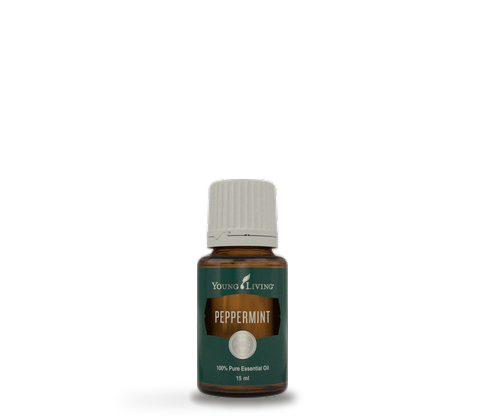
Gaivus, vėsus kvapas. Pabunda ir kambarys, ir tas, kas jame sėdi.
Kada: ryte arba darbo kampe, kai reikia susikaupti. Stiprus, užtenka kelių lašų.
Užsisakyti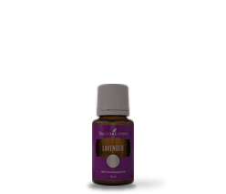
Minkštas, ramus kvapas. Tas, nuo kurio dažniausiai ir pradedama.
Kada: vakare, kai dienos triukšmas baigiasi. Difuzorių išjunk prieš miegą.
Užsisakyti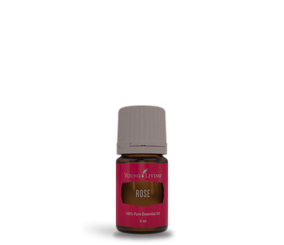
Sodrus, gilus kvapas. Vienam 5 ml buteliukui reikia 10 kg rožių žiedlapių, todėl jis vienas brangiausių ir naudojamas po lašą.
Kada: ypatingam vakarui ar savo ramybės minutei. Užtenka lašo į įprastą kūno losjoną.
Užsisakyti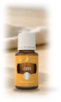
Ryškus, citrusinis ir gaivus aromatas. Young Living jį vadina saulės spinduliais buteliuke.
Kada: ryte, kai norisi žvalumo. Užtepę ant odos, iki 12 valandų venkite saulės.
Užsisakyti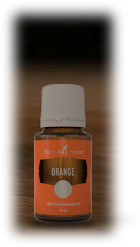
Saldus citrusinis aromatas iš šalto spaudimo apelsinų žievelių. Džiaugsmingas ir vaisinis, suteikia namams švaros kvapą.
Kada: žiemos vakarais, kai norisi šilumos. Užtepę ant odos, iki 12 valandų venkite saulės.
Užsisakyti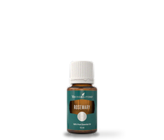
Gaivus, kvapnus aromatas iš Viduržemio jūros krūmų žiedų ir lapų. Young Living rašo, kad jis skatina aiškumo ir susikaupimo jausmą.
Kada: kai reikia susikaupti. Arba keli lašai į kūno prausiklį.
UžsisakytiSodrus, saldus, balzaminis aromatas iš Boswellia carterii sakų. Young Living jį skiria įžeminimui ir meditacijai.
Kada: ramiam vakarui ar meditacijai. Įkvėpti: keli lašai ant delnų.
Užsisakyti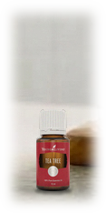
Ypatingai šviežias aromatas ir valančios savybės. Auginamas ir distiliuojamas Amanzi Amahle ūkyje Pietų Afrikoje.
Kada: vonios rutinoje: keli lašai į losjoną ar dušo gelį, į vonią 6–8 lašai.
UžsisakytiRyškus žolelių aromatas su šiltais, pikantiškais atspalviais. Romėnai jį vadino „šventa žolele“.
Kada: tik ant odos, praskiedus (15 lašų į 10 ml bazinio aliejaus), masažui. Nėščiosioms nenaudoti.
Užsisakyti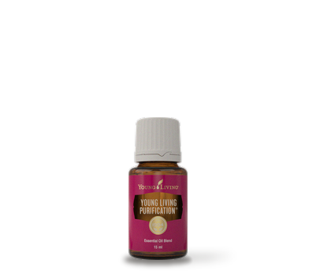
Gaivūs, kiek citrusiniai citrinžolių kvapai su minkštu gėliniu levandinų, žoliniu rozmarinų ir į kamparą panašiais mirtų bei arbatmedžio kvapais. Mišinį sukūrė Young Living įkūrėjas D. Gary Young.
Kada: po vakarienės, kai norisi gaivaus oro. Garinti iki 30 minučių, 3 kartus per dieną.
Prieinamas registruotiems BRAND partneriams arba Lojalumo programos dalyviams.
UžsisakytiTiek lašų difuzoriuje pradžiai. Young Living garintuvams rašo 8-10 lašų, bet tai riba, ne pradžia.
Tiek per dieną garink naują aliejų, ilgink pamažu. Per naktį nepalik.
Gyvūnas turi galėti išeiti iš kambario. Prie mažo vaiko lovos difuzoriaus nejunk.
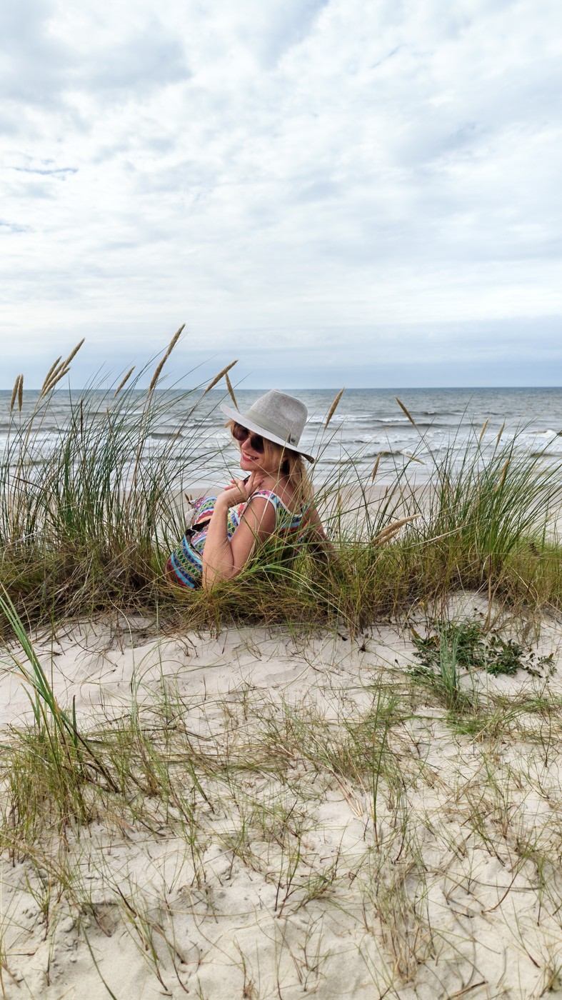
Raindrop yra būdas, kai aliejai po lašą lašinami išilgai nugaros ir švelniai paskirstomi pirštų galais. Jį namuose daro vienas šeimos narys kitam. Ramiai, be skubėjimo, vakarą, kai niekur nereikia bėgti.
Tam nereikia jokio specialaus pasiruošimo ar kelionės pas ką nors. Reikia rinkinio ir pusvalandžio laiko vienas kitam.
Young Living turi atskirą Raindrop rinkinį, jame visi reikalingi aliejai. Kai kurie iš jų stiprūs, todėl prieš pirmą kartą perskaityk rinkinio aprašymą ir atsargumo nurodymus. Rinkinį rasi Young Living puslapyje per mano nuorodą.
Ar žinai, kad yra kvepalų su eteriniais aliejais? Wyld NOTES juos papildo kadagio, levandų, muskatinio šalavijo ir juodosios eglės aliejais iš savo ūkių.
Tai naujiena ir man pačiai. Užsisakiau visus keturis ir laukiu siuntinio. Kai pauostysiu, parašysiu, kuris man artimiausias. Kol kas rašau tai, ką sako gamintojas.
Kvapo natos keičiasi laikui bėgant. Viršutinės natos yra pirmas įspūdis: dažnai lengvos, gaivios ar citrusinės, jos išgaruoja per pirmąsias 15–30 minučių. Joms nykstant atsiskleidžia vidurinės natos, kvapo šerdis: sodresni gėlių, prieskonių ar žolelių kvapai, išliekantys kelias valandas. Bazinės natos suteikia gylio ir ilgaamžiškumo: šilti, sumedėję ar muskusiniai aromatai išlieka valandas ar net dienas. Taip kvapas atsiskleidžia sluoksnis po sluoksnio.
Kiekvieno kvapo natos atsiras užvedus pelę ant lašiuko prie buteliuko (telefone — palietus).
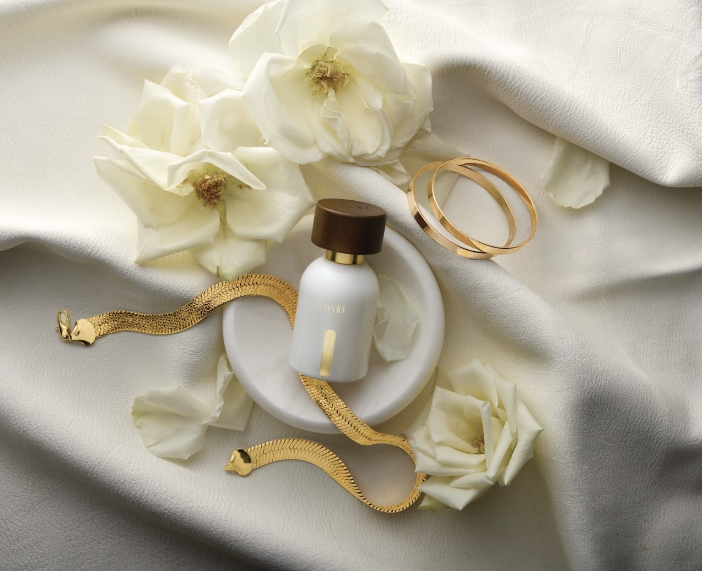
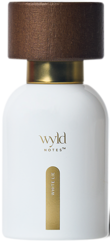
White Lie
Švelnus, pudrinis grakštumas su paslaptimi
ViršutinėsBergamotė · pelargonija
VidurinėsJazminas · rožė
BazinėsPačiuliai · vetiveris
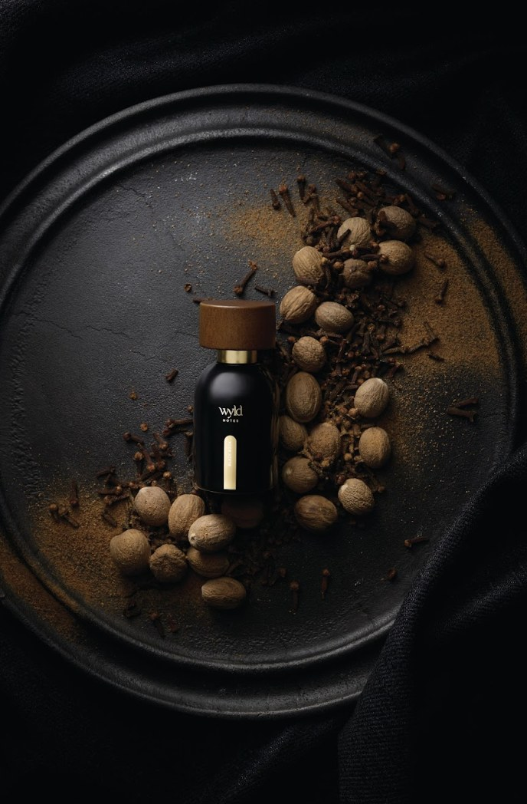
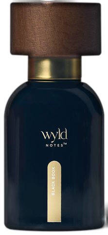
Black Book
Prieskoniniai šešėliai ir magnetiška intriga
ViršutinėsMuskato riešutas · imbieras
VidurinėsOsmantas · kadagys
BazinėsLadanas (smilkalai) · tonkos pupelė
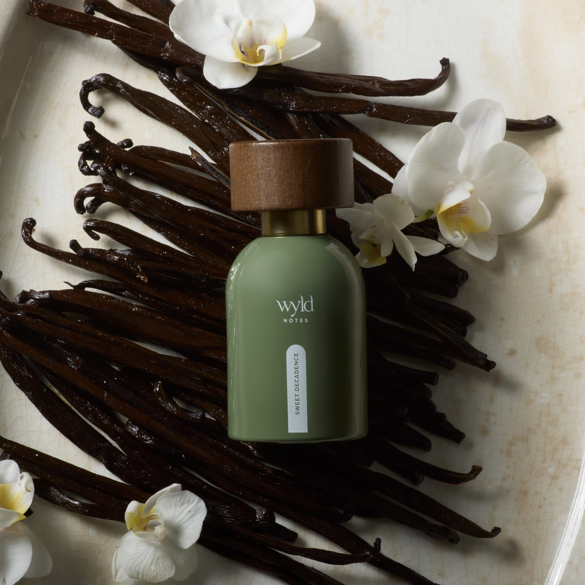
Sweet Decadence
Įkvėptas ką tik iškeptų kepinių ir riešutų skanėsto
ViršutinėsApelsinas · levanda
VidurinėsKokosas · rožė
BazinėsTonkos pupelė · vanilė
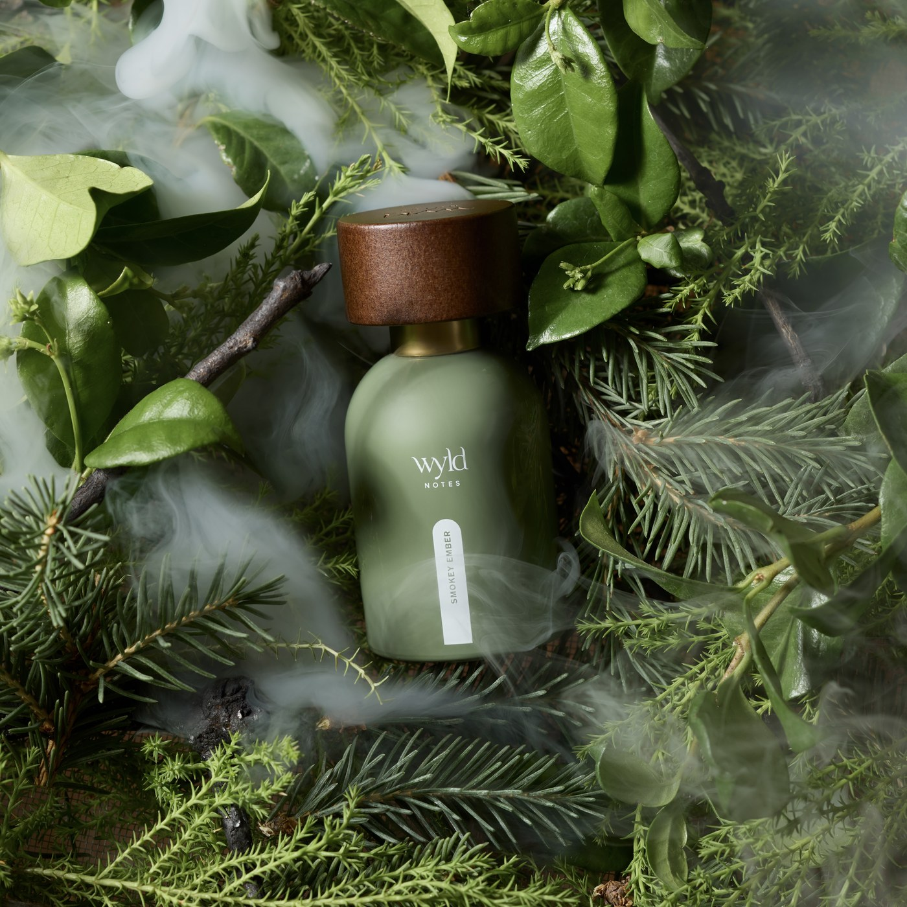
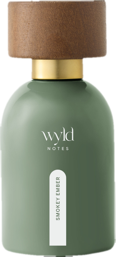
Smokey Ember
Kelionė per miškus ir saulės nutviekstus kraštovaizdžius
ViršutinėsCitrina · kadagys
VidurinėsJazminas · muskatinis šalavijas
BazinėsKiparisas · juodoji eglė
Visus kvepalus pamatyti ir užsisakyti gali čia: wyldnotes.com.
Pirmą kartą perkant, kasoje įvesk kodą lasas-juroje. Kvepalai siunčiami ir į Lietuvą.
Jei iššoks langas su el. pašto laukeliu, spausk „No, thanks“: nuolaida jau tavo su kodu lasas-juroje.
Pažiūrėti kvepalusYoung Living kas sezoną išleidžia gidą lietuviškai. Dabar tai rudens dovanų gidas.
Pažiūrėk, kas šį sezoną naujo. Kai išsirinksi, užsisakyk per mano nuorodą — taip žinosiu, kad atėjai per mane, ir galėsiu padėti.
Užsisakyti per mano nuorodą Atsiversti gidąMan nereikia skambinti ir nereikia susitikti. Užsisakai pats, kada tau patogu, o siuntinys atkeliauja tiesiai į namus.
Užsisakai, ko reikia, ir tuo baigi. Privalomos sumos nėra, gali užsisakyti ir kartą per metus.
Užsakai reguliariai, ir siuntinys kas mėnesį ateina pats, tad pamiršti nebeįmanoma. Tam reikia bent 50 PV per mėnesį. Taškais grįžta 10 %, nuo 4 mėnesio iš eilės 20 %, nuo 25 mėnesio 25 %.
Jei dar nežinai, ką imti, pradėk nuo vieno aliejaus iš keturių aukščiau.
Į Young Living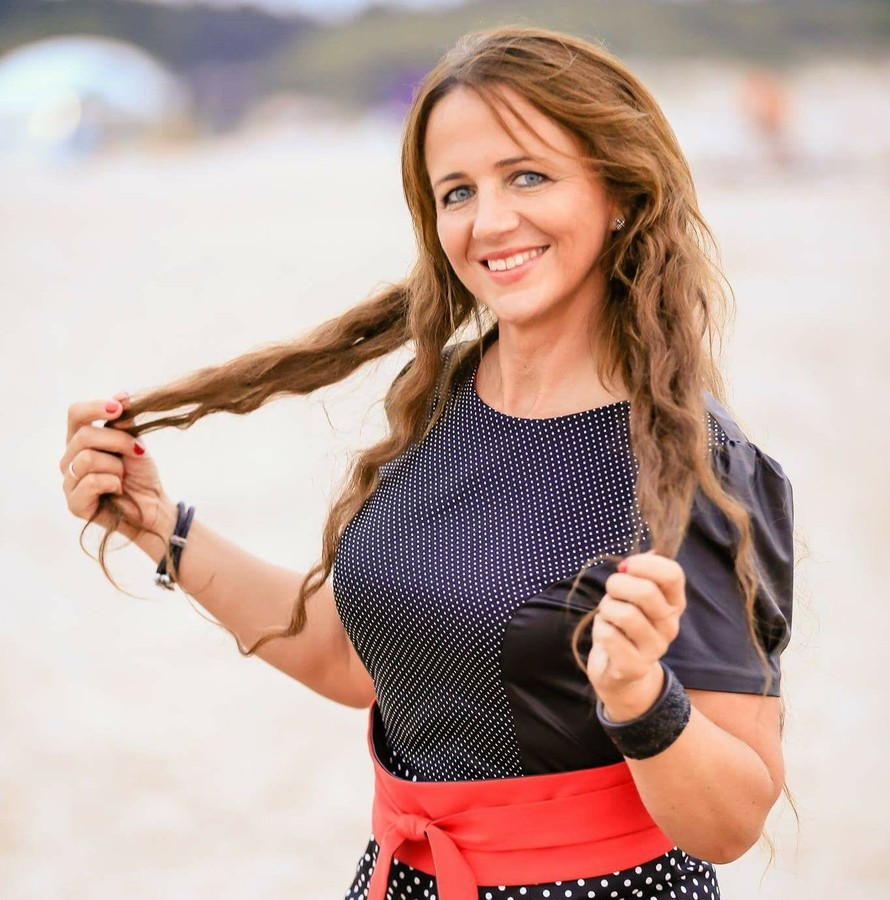
Aš paaiškinu, kaip aliejus naudoti namuose, ir padedu išsirinkti, nuo ko pradėti. Užsakai pats, per mano nuorodą, kada tau patogu.
Nežinai, kurį imti? Parašyk man Facebook. Paklausiu trijų dalykų ir pasakysiu vieną pavadinimą. Jei pasirodys, kad tau šito nereikia, taip ir pasakysiu.